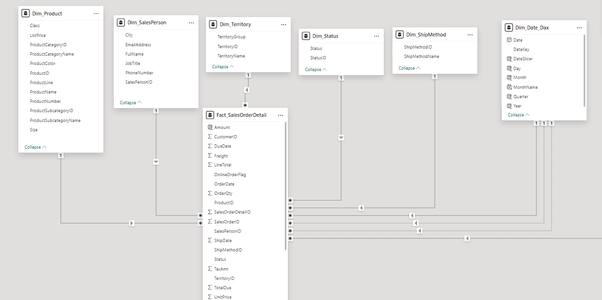

Comprehensive Company Analysis
A 3 page Power BI dashboard that analyzes overall company performance, salesperson report, and inventory report.
Uses Adventure works 2022 OLTP database with import mode and direct query mode.
Insights
Overall Company Performance
- total amount sold is lower than total due amount
- total orders are higer in Q4 but avg amount is lower than in Q1
- southwest is the hightest selling territory, canda and northwest are similiar in amount of money earned
- bikes are the most QTY sold followed closely by clothing
Salesperson Report
- by quarter linda mitchell is the sales person that has the most sales, while syed abbas is the lowest sellign sales person
- by month its a tie between linda mitchell and jar pak for the the highest selling sales person, the lowest selling salesperson is still syed abbas
- if we go to the dril through of linda mitche by quarter 3 we find its 119 for count of orders while jae pak is 90
Inventory Report
- canda is the highest selling territory by all categories, components sell very little in australia, accessories sell little in central
- bikes have the highest avg unit price despite selling the highest quantites, acessories have the lowest avg unit price
- if we look at the average order qty we find that acessories have the most qty sold, second is clothing which have similiar avg unit price to acessories
The Process
The data (link) has many tables but we used some of it
The data was extracted and modeled in a star schema with the 6 dimentions & one fact table

Measures
For this particular analysis we used measures- # orders
- AVG Freight
- AVGAmountQ1
- AVGAmountQ4
- MaxYear
- prevMTH
- prevQTR
- salesQ1
- salesQ4
- sumAMT
- TotalDue
- TotalTax
drill through
For salesperson report drilltrough was utilized for quarter and month by salespersons it shows previous month or previous quarter bases on selectionBookmarks
- the buttons that changes from total orders & avg amount
- the buttons that changes quarter & month